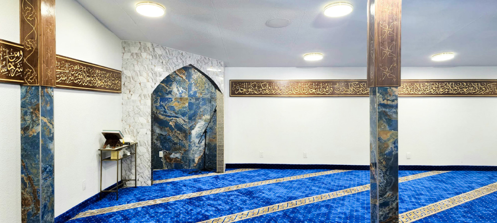
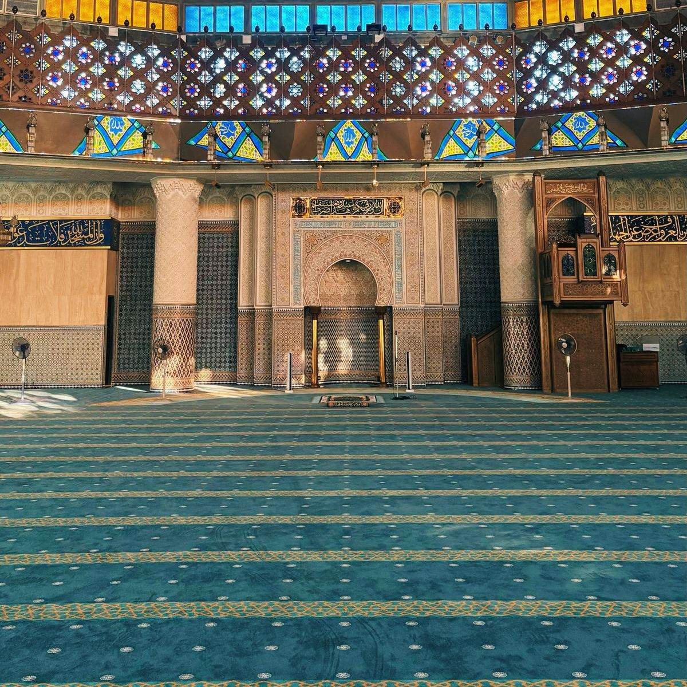
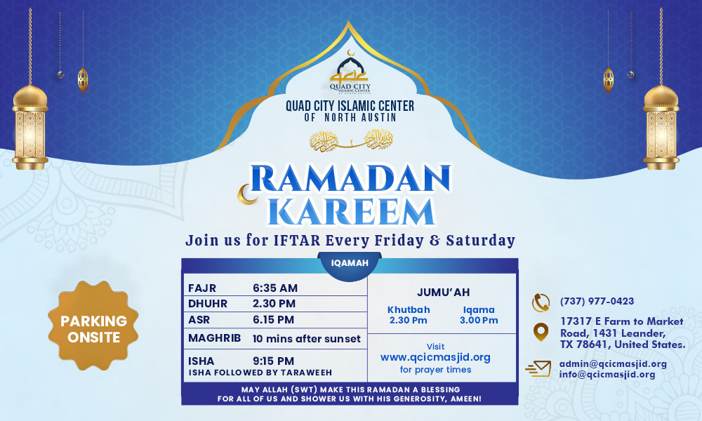
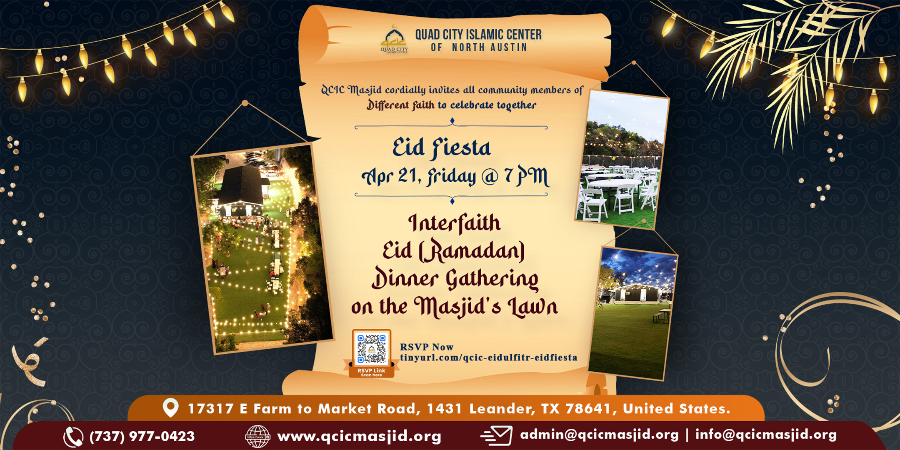

Faith First
Congregational prayer, Qurʾānic learning, and remembrance of Allah remain the heartbeat of QCIC.
The story of QCIC is the story of a small group of neighbors who wanted a place to pray — and ended up building a home for the whole community.

QCIC — the Quad City Islamic Center of North Austin — began as a modest prayer space for a handful of Muslim families in Leander who wanted somewhere close to home to gather for ṣalāh. As the community grew, so did the vision: not just a place of worship, but a resource the whole neighborhood could lean on.
Today QCIC is a registered 501(c)(3) non-profit guided by the Qurʾān and the example of Prophet Muhammad ﷺ. Our congregation is multi-ethnic, multi-racial, and multi-lingual — and every program we run, from Friday khuṭbahs to our free health clinic, is built on the same idea: our doors swing open just as wide for our Leander neighbors as they do for our own members.
Plan Your VisitFour commitments shape every program, every event, and every decision our community makes.
Congregational prayer, Qurʾānic learning, and remembrance of Allah remain the heartbeat of QCIC.
Neighbors of every faith and background are welcome to observe, ask questions, and take part.
Our free clinic, counseling, and outreach exist for anyone in need — no membership required.
A non-sectarian congregation that welcomes Muslims of every background as one community.

Daily prayers, khuṭbahs, and religious guidance are led by our resident Imam, who is also available for counseling and questions from Muslims and non-Muslims alike. Beyond that, QCIC is almost entirely volunteer-run: a community board oversees operations, and dozens of neighbors give their time each week to teach Qurʾān classes, staff the health clinic, organize events, and keep the masjid running.
If you'd like to get involved — whether that's teaching, volunteering at the clinic, or helping plan community events — we would love to hear from you.
Get in TouchA few frames from daily life at QCIC — browse the full gallery to see more.


The best way to understand QCIC is to walk through our doors. Come pray with us, tour the building, ask a question, or simply say salām.